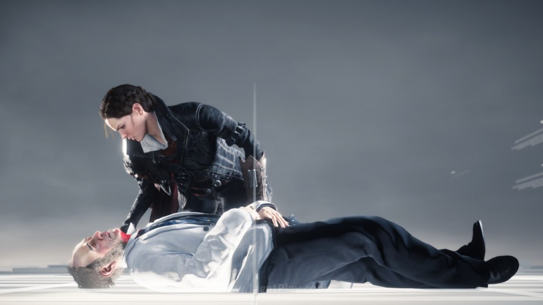
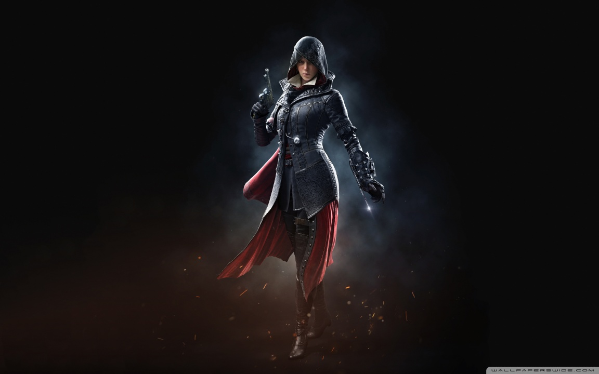
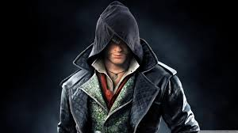
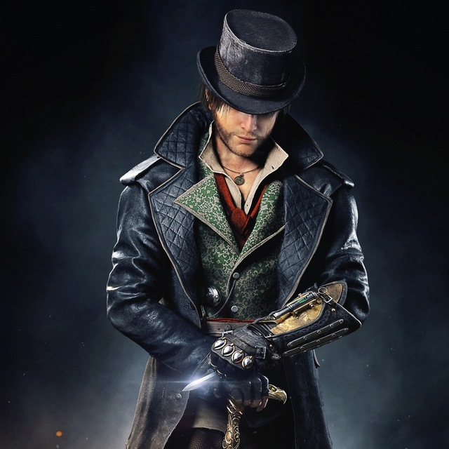
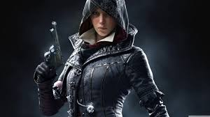
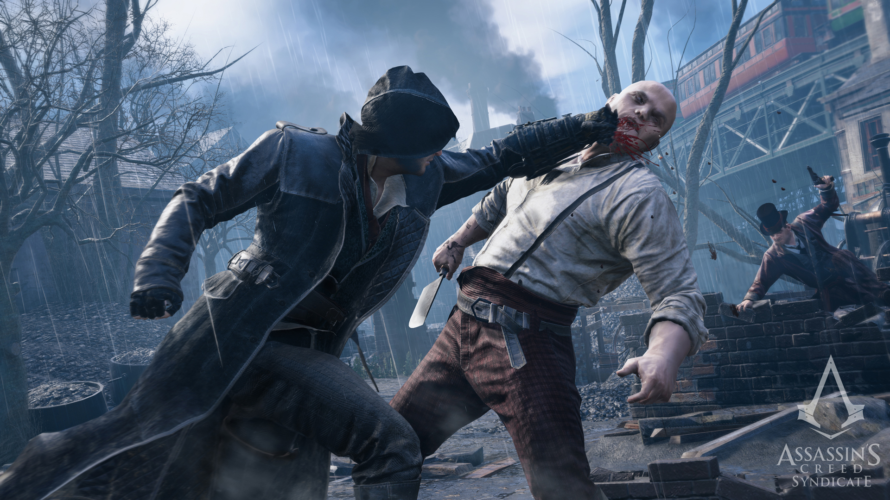
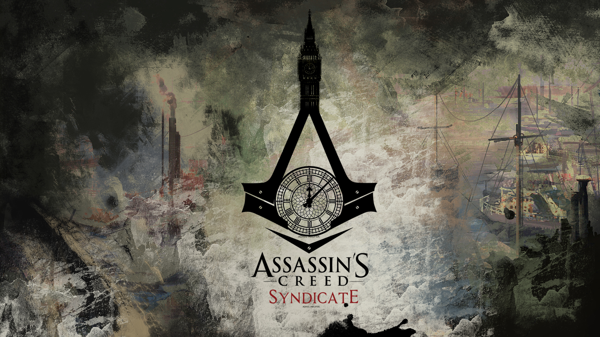

Tak lagi mampu ditangani seorang diri, Ubisoft akhirnya mulai menerapkan sistem yang sama seperti yang ditawarkan Activision untuk franchise miliaran USD yang juga jadi sumber uang utamanya – Call of Duty. Setelah ditangani hanya oleh Ubisoft Montreal selama ini, didukung dengan rilis Assassin’s Creed Unity yang dipenuhi masalah teknis, Ubisoft akhirnya memutuskan untuk mulai menggilir poses pengembangan game open-world bertema sejarah andalannya ini ke developer yang lain – Ubisoft Quebec. Tahun 2015 menjadi ajang pembuktian Quebec yang selama ini hanya berperan sebagai developer pendukung. Jawaban yang mereka tawarkan mengalir bersama dengan timeline yang kian maju di Assassin’s Creed Syndicate.
.
Sebagian besar Anda yang sudah menyimak artikel preview kami tampaknya sudah mengerti apa yang ia tawarkan. Seperti yang sempat kami bahas sebelumnya, kesan pertama yang ia tawarkan memang lebih solid dibandingkan apa yang ditawarkan Montreal di Assassin’s Creed Unity. Unity lebih terasa seperti sebuah proyek eksperimental yang berusaha mendorong franchise populer ini ke level yang baru, terutama dari sisi kualitas visual dan kosmetik. Sebuah kebijakan yang jadi bumerang mematikan, apalagi dengan kritik pedas yang mengalir di sana-sini. Assassin’s Creed Syndicate jadi proyek pembelajaran. Mereka mengerti apa yang salah dengan Unity, menghindari hal yang membuat gamer marah, mengembalikan apa yang membuatnya dicintai, dan menawarkan sebuah setting dan karakter baru di dalamnya Lantas, apa yang sebenarnya ditawarkan oleh Assassin’s Creed Syndicate ini? Mengapa kami menyebutnya sebagai seri solid yang tak banyak berbeda? Review ini akan membahasnya lebih dalam untuk Anda .
PLOT

Dari segi plot, seperti kebiasaan di seri seri sebelumnya, tak ada banyak hal yang berbeda di Syndicate. Anda masih terjebak dalam pertarungan klasik antara para Assassin dan Templar yang tak pernah jelas ujungnya dengan agenda masing-masing. Assassin percaya bahwa dunia sudah selayaknya berada di kekuasaan dan keputusan yang banyak, sementara Templar berjuang untuk mengendalikan segala sesuatunya dalam kekuasaan yang lebih otiriter. .
Keduanya bertarung di balik bayangan sejarah dan menjadi kekuatan yang mempengaruhi banyak ikon sejarah yang selama ini kita kenal. Assassin’s Creed Syndicate masih berkisah dengan benang merah yang sama. Bedanya? Kali ini pertempuran tersebut terjadi di masa Revolusi Industri, Inggris..
Sumber.jagatPlay
Profile Character

Evie Frye
Dame Evie Frye (1847 - tidak diketahui) adalah seorang Assassin Utama dari Persaudaraan Inggris dari Assassins, aktif di London selama era Victoria, dan saudara kembar yang lebih tua dari Jacob Frye. Dia juga anggota Order of the Sacred Garter, dan grand-bibi dari Lydia Frye..

Jacob Frye
Sir Jacob Frye (1847 - tidak diketahui) adalah seorang Assassin Utama dari Persaudaraan Inggris dari Assassins, aktif di London selama era Victoria, dan saudara kembar yang lebih muda dari Evie Frye. Dia kemudian menjadi anggota Order of the Sacred Garter Ratu Victoria, dan kakek dari Lydia Frye.

Jacob Frye
Berkebalikan dengan saudara kembarnya Evie Frye Jacob sendiri merupakan sosok karakter yang lebih mengandalkan kekerasan untuk menjatuhkan Templar.

Evie Frye
Dame Evie Frye (1847 - tidak diketahui) adalah seorang Assassin Utama dari Persaudaraan Inggris dari Assassins, aktif di London selama era Victoria, dan saudara kembar yang lebih tua dari Jacob Frye. Dia juga anggota Order of the Sacred Garter, dan grand-bibi dari Lydia Frye..


Rangkuman
Perlahan namun pasti, semua investigasi yang dilakukan Arno mengarah pada satu sosok yang identitas dan keberadaannya masih begitu misterius. Namun kharisma dan misi yang ia dimiliki oleh sang tokoh antagonis utama ini berhasil mengikat begitu banyak Templar kuat lainnya, yang tidak ragu untuk memengaruhi kondisi politik Perancis yang tengah kacau untuk sebuah misi “suci” yang masih dipertanyakan. Di tengah perjalanan ini pula, Arno bertemu dengan beberapa tokoh historis yang tentu tidak akan asing lagi bagi Anda, termasuk Napoleon Bonaparte di dalamnya.
.
Lantas, siapa sebenarnya dalang dari semua kekacauan ini, termasuk tewasnya De la Serre? Apakah Arno dan Elise akan bersama? Bagaimana konflik historis antara Assassin dan Templar ini akan berakhir? Jawaban dari semua pertanyaan tersebut bisa Anda jawab dengan memainkan Assassin’s Creed Unity ini..